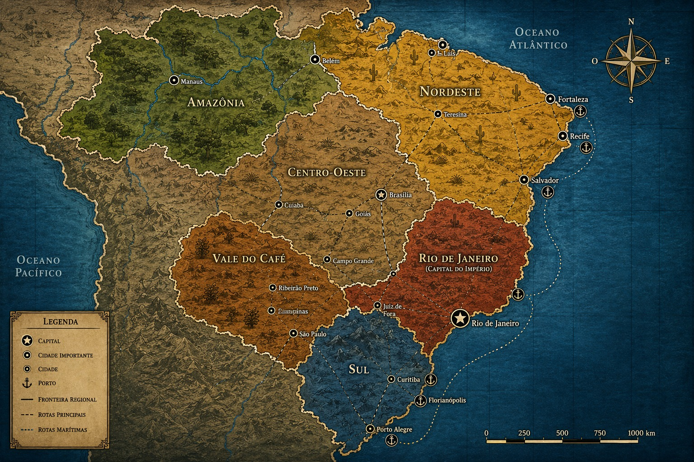

Sombras da República
Escolha o seu papel na sessão de RPG:
👤 Entrar como Jogador
👑 Entrar como Mestre
Fase:
O Tabuleiro
Essência:
Observador
🌐 Online:
0
🗺️ Ver Mapa
Sombras da República
×
Mapa Tático Regional
